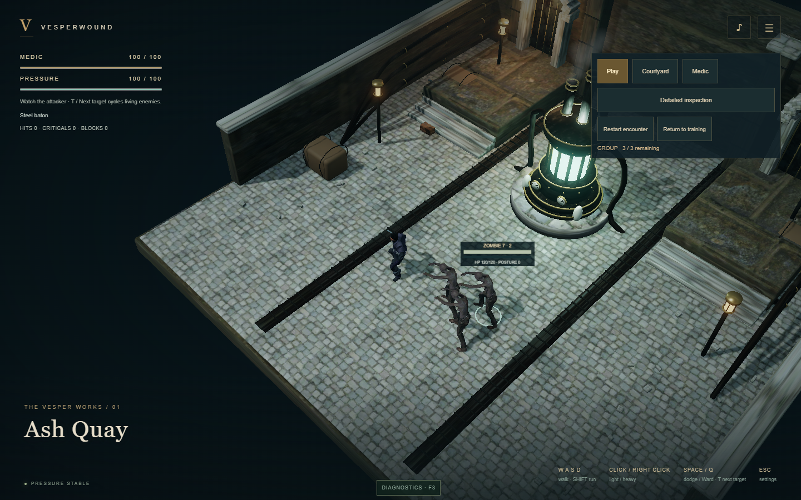
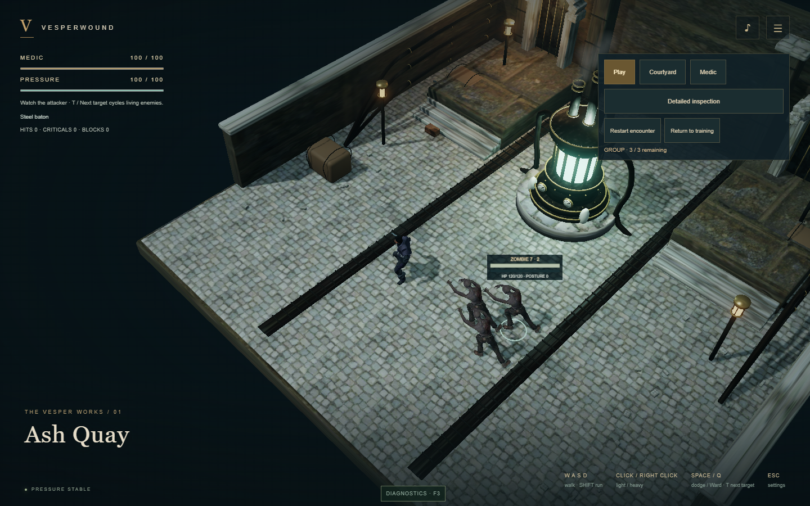
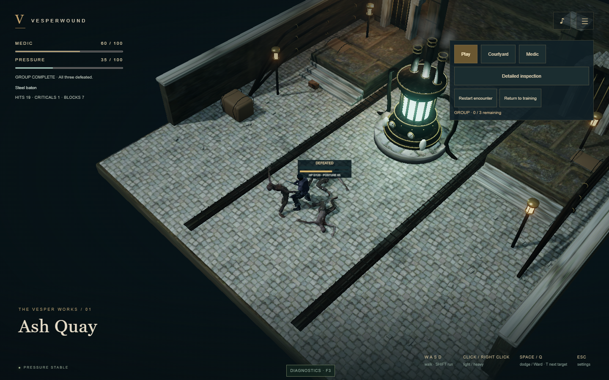
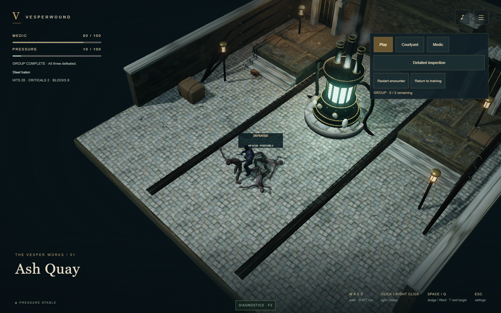
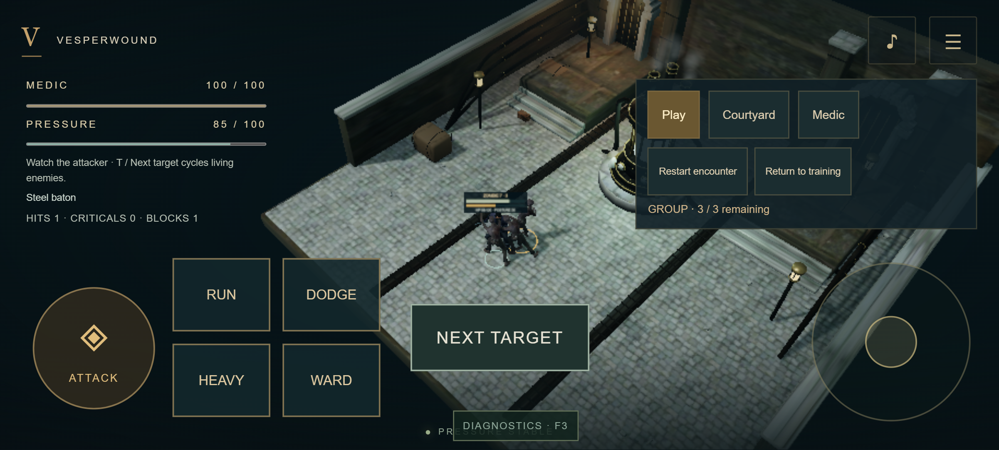

Phase 4B — three-zombie group encounter
Actual Chrome WebGPU/WebGL2 captures and real keyboard/pointer fights. The accepted Medic, baton and zombie assets are retained.
Validation report · Implementation
WebGPU combat recording
WebGL2 combat recording
Three enemies and focused target

webgpu-required
webgl2All three defeated

webgpu-required
webgl2Mobile landscape · left handed · 140% controls

Physical-phone performance and user combat/visual approval remain separate gates.